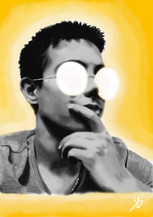

CV Mathieu Deransart

Diplomas and training
- Since 2019 : École Centrale de Marseille
- 2017-2019 : Grandes Écoles preparatory class
- 2016-2017 : Baccalaureate
Professional experiences
- Vice-president of E-Gab, robotics association
- Target CFR 2020 (national competition)
- Vélo Dayak, 38400 Saint-Martin-d'Hères, Internship to discover the company
- Reception / labelling
- Phone and appointment taking
- Update of the bike park, ...
- Midali, TP company, 38570 Theys Labourer, 3 weeks in interim
- Teamwork with masons
- Disassembly of a water inlet
- Preparation of panels
Skills
Computer science
Programming in different languages : Python, C, C++, OCaml, Matlab, Java
Collaboration : GitHub, Outils Drive
Modeling : SolidWorks
Languages
English, Italian (mobility in Italy)
Beginner Spanish